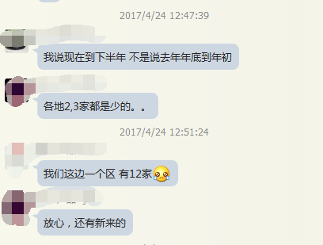
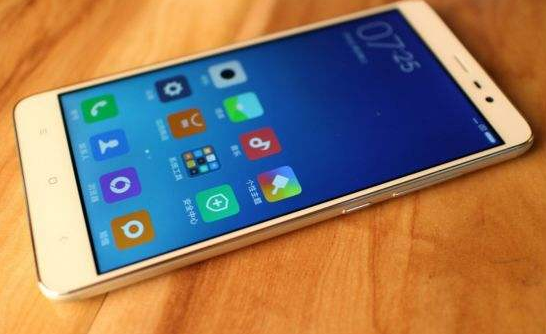
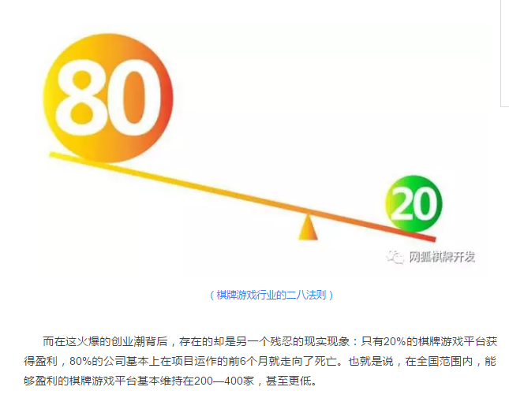
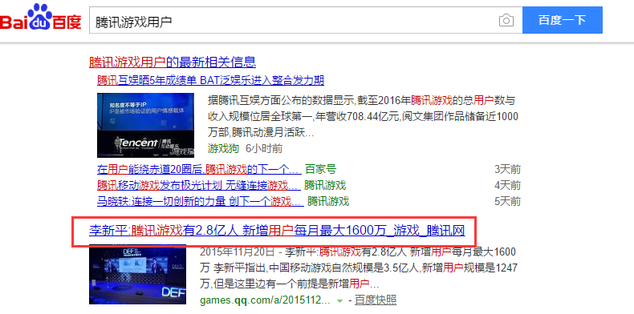
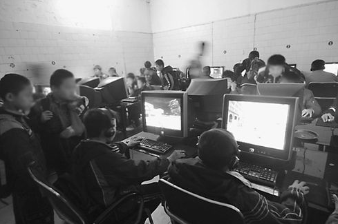
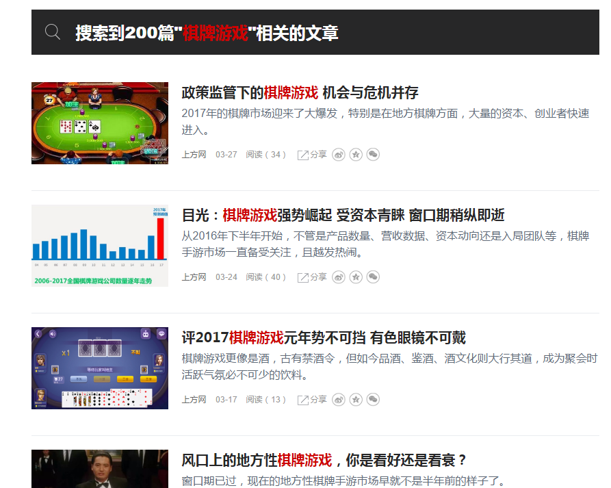

自2016年下半年以来，棋牌游戏迎来爆发。尤其是地方棋牌，大量资本、创业者的入局让整个棋牌市场备受关注，越发热闹。那么棋牌游戏这个在外行人眼中，始终略带神秘色彩的行业，究竟是怎样搅动2017年游戏行业的市场风云，棋牌游戏的“水”到底有多深呢？为此，我们采访到了国内知名棋牌游戏开发商——纹桃科技创始人之一胡穗华。
纹桃创始人之一胡穗华
很多“业内人士”都说做棋牌游戏的水很深，真实情况是怎样的？
棋牌游戏的“水”深吗？对刚入行或者外行的企业或个人来说当然深。进入一个陌生的全新的领域，意味着你要面临许多全新的问题。胡穗华笑着说：而针对棋牌游戏来说，你要面临程序问题、政策问题、推广问题、用户方向、地方竞争等等问题。你要是作为一个外行人，看到这么多问题会不会也觉得棋牌的水很深呢？但其实严格来说，这些问题是存在各行各业的，不可能只存在于棋牌。用一句话来概括就是：你视熟悉的领域为坦途，在外行人眼中看来却是无法企及的高峰。
回到问题上来，如果那位真的是“业内人士”的话，那他就不应该觉得棋牌游戏的水很深，都游刃有余的东西，怎么还会觉得水深呢？只有这行的新鲜血液，才会觉得深。这就是这个行业的真实情况。以前是两三家地方棋牌公司抢一块地级市的蛋糕，现在可能是十几家，所以才会出现这种白热化的市场竞争态势。而在我看来，这种现象至少还会持续大半年的时间。

某棋牌运营群关于各地棋牌市场的讨论
这又是为什么呢？因为棋牌游戏的投资回报率特别高。投资成功所获得的利润远远大过投资成本。可能前期投入的几十万、百来万成本，一个月就回来了。说夸张点，这种利润率，相当于你买支股票一年365天，天天涨停。关键这是一门合法的生意，不用承担法律风险。你做个寻常生意，怎么可能会有这么高的回报呢？举个简单的例子，你摆个小摊去卖凉粉，能做到几百倍的回报吗？不可能吧？但棋牌游戏能。胡穗华笑道：如果卖凉粉能有几百倍的利润，那我想全国各地的人肯定都去卖凉粉去了。
有人说2017年是棋牌元年，这个观点你怎么看？
我先下个定义，2017绝对不是所谓的棋牌元年。有中国文化的时候，就有棋牌。如果非要追溯一个所谓的“元年”，那就得到上古时代了。胡穗华笑着说：开个玩笑哈，如果真的要朔本清源，扑克是西方传入中国的，棋类游戏则从春秋战国时候就有了。另外，其实棋牌市场在很多年前就已经白热化了。为什么偏偏在这个时间段，有这么多企业、个人进军这个领域呢？主要有这么几个原因，一是移动终端设备的普及。在三线城市，在农村生活的人们用着千元左右的智能机。用来玩一些大型网游可能有些勉强，但用来玩棋牌游戏却是绰绰有余。换句话来说，用户+终端支持都已经是非常成熟了。二是棋牌游戏的盈利能力强。这个你们关注一下去年各大棋牌公司的年报就能了解到。没错，就是这么简单暴力。资本都是逐利的嘛，哪里有钱赚它就往哪去。所以才造就了今天棋牌市场百花齐放的局面。

几百块钱的智能机玩棋牌游戏绰绰有余
当然，这也与你们本身身处游戏行业有关。我这么跟你说吧，如果你现在是个卖手表的，那你绝对看不到棋牌游戏市场的火爆。一批批的资本入场，一批批的平台上线，所以你们感觉现在整个行业很火爆。这么说的话，三四年前什么最火爆？微商最火爆，微盘最火爆。自己搞个平台开个私盘，赚钱都赚疯了。
但对于普通的用户来说，他们是感受不到棋牌游戏市场的火爆的，用户关注的永远是全国范围内那些做的最好的产品。正因为你们身处整个互联网行业的手游细分领域，你们才有足够多的信息资讯，去验证市场是不是真的火起来了。当然，同样是手游，现如今各行各业进军棋牌领域的公司或个人，要比其他手游类型要高很多很多倍。所以才会有人说，2017年是棋牌元年。道理是这个道理，但说法上还是有些偏颇的。
个人创业者做棋牌游戏是个好选择吗？
高成功率，高投资回报率，低投入成本。这三个因素汇聚到一起，在你看来是不是个好的创业项目呢？别人我不敢说，至少来找纹桃做开发的，肯定认为是个不错的选择。这其中又有一部分个人创业者进行尝试后，赚到钱了，才会吸引更多的创业者入局。毕竟这个东西又不是传销，况且就算是传销第一波进去的肯定也是赚钱的。所以这个事情怎么说呢？胡穗华笑道：谁也不愿意自己是最后一波进场的，是吧？
个人做棋牌成功几率有多大？
这个问题，其实刚刚我已经侧面回答过了。胡穗华说：成功率当然大，不然不会有这么多新鲜血液入局。我刚刚也说过，在房卡模式之前，也同样有很多人从事地方棋牌游戏创业。从纹桃统计的数据来看，那会个人创业者的成功率大概在1%-3%之间，可以说是非常低的。现在就不一样了，成功率能达到20%—30%。在有些地区甚至能达到50%。我们纹桃之前在公众号发表了一篇文章，专门描述了这一现象，棋牌游戏行业的“二八法则”。

纹桃曾专门撰文写过这种现象
国内地方性棋牌游戏市场竞争格局要如何打破？
这个问题问的比较泛，我就简单说一下。在我看来，国内地方棋牌游戏市场的竞争格局没办法打破。市场、用户、利润摆在那里，你让别人不去抢，这可能吗？这就好比你把一万块钱扔在马路中间，人走开了，还不让别人去捡。肯定会有人去嘛对不对。胡穗华玩笑道：你要问我这种格局怎么打破，那就只能请警察叔叔守着这一万块钱了。
市场在那里，那么它就存在竞争，这是很合理的事情。举个简单的例子，腾讯做棋牌做了十多年了，坐拥几亿用户，也照样不能统一全国市场，这其实很能说明问题。我很早之前曾经跟朋友说：棋牌游戏就是这么神奇的一个领域，不管你投入多少资金来做棋牌，来做资源整合，都没办法来统一。

腾讯游戏就坐拥2.8亿用户，仍然无法统一棋牌市场
因为地方棋牌，它是一个门槛非常低的行业，但同时却又需要做长期的运营，而那些想捞一笔就跑的，大多数反而将本金亏进去了。我这么跟你说，做棋牌游戏就好比开便利店。选好地段，装修进货开业，二三十万全搞定。如果经营的不错，整合资源把用户做起来了，那么你就可以无限的复制下去。
地方棋牌就是这么个东西，起步非常低端，而未来的发展又非常的没有上限。这么一个事业，你看得到机会，别人自然也看得到。你想做，别人自然也想做。所以竞争是正常的，你问我这格局怎么破？我告诉你：没法破，也没必要去破。这就是棋牌游戏的特别之处。
典型的平台是怎么做的？
典型的平台怎么做的？在我看来，所有典型的平台一直以来都在做同一件事——做好产品与用户的互动。这也是产品不断进步的源泉。正是因为所有平台都在做着这件事，棋牌才会从最开始的金币模式发展出了比赛模式，再到如今的房卡模式。棋牌游戏十几年，纹桃经历的太多。今天的产品，不论是美术风格，还是产品的交互设计，都与十多年前有着非常大的区别。根源就在于，用户年龄段不断的扩大。像03年那会，有条件玩棋牌游戏的，除了在单位工作的那批人，就只有在网吧上网的那批了。没办法，终端没普及嘛，那会有几家几户有电脑呢？而到如今，几乎每个年龄段的人都能在手机上跟亲朋好友玩上两局。玩家群体多了，市场自然就大了，针对不同细分人群的产品也就不断涌现了。所以，剖析所谓的典型平台没有意义，关键在于未来。

03年那会大部分人上网只能去网吧，终端普及数量稀少
而未来的产品…..胡穗华顿了一下说：不说未来，两三年以后就肯定会有新的产品出来。当然，大家还是玩牌，只是平台的概念会有所改变。因为就我个人看来，从开发商的角度来看，产品与用户的互动其实还没有做到极致，还是有很大的改进空间的。
地方棋牌发展的很快，介绍一下现在做棋牌游戏的主要有哪些群体？
怎么说呢，其实这个群体已经没办法划分了。个人在做，企业在做，大型的游戏公司同样在做，像游族、网易这些大的游戏公司，以前对棋牌都不会正眼瞧的，如今也在进军棋牌。而且据我所知，投入的资源和成本也是非常大的。另外像一些中小型游戏公司、外资，也都在涉及这个领域。可以这么说，全中国有钱、想干的人都来了。
大家都在尝试，所以这个群体没办法划分。可能这家企业有现成的技术团队，想做棋牌；那个车行老板有地方推广资源，想做棋牌；更有甚者有些人就是有钱，不怕花个一两百万做个棋牌玩玩。
这些群体进来后，对棋牌游戏行业会带来怎样的影响？
带来影响肯定是有的，我就说最显著的一点吧——会带来媒体方面的影响。很多媒体会更加关注棋牌游戏行业，尤其在今年，各大游戏新闻媒体对棋牌游戏企业的报道明显增加了不少。而在曝光度增加后，与之对应的，会产生羊群效应，各行各业的个人或公司可能都会进军这个行业。从而让这个行业变得更加“热闹”。

去年下半年以来百度百家关于棋牌游戏的文章明显增多
纹桃做了这么多年，通过购买你们平台发展起来的，做得最好的是哪一家？
纹桃做了这么多年，我认为做的最成功的，就是给众多运营商提供了众多运营级的产品。而运营商又通过自身的资源，去获得了更大的成功。通过购买我们平台发展起来的平台，其实有很多家。而棋牌这个东西，又是需要沉淀的，除了闲徕、皮皮那种率先走出新模式的，没有几家公司能在两三年内就能做得很大。
所以，这些运营不错的平台，都是我们的老客户了，在我们官网的成功案例上都有，在这里我就不重复了。想了解的话，可以多关注我们官网。说来说去，我还是那句话——纹桃做了这么多年有品牌有口碑，并不是我们做得要有多好，而是我们在业界做得比较有良心。纹桃科技致力于棋牌游戏开发13年，拥有大量开发运营经验和大批成功案例。
想打造一款迅速盈利的棋牌游戏，欢迎咨询电话热线：18711739336
了解更多棋牌游戏行业信息：在线咨询>>


游戏产品
PRODUCTS

售后服务
SERVICE

技术支持
TECHNOLOGY

运营指导
OPERATING